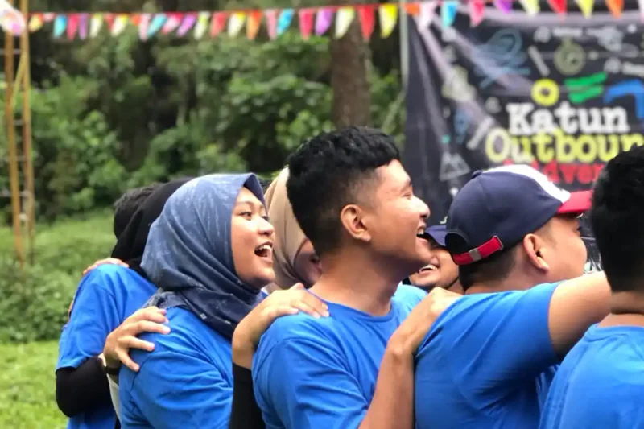

Permainan outbound tanpa alat adalah aktivitas team building yang hanya mengandalkan tubuh, suara, dan instruksi peserta tanpa membutuhkan properti khusus. Jenis permainan ini cocok untuk ruangan indoor maupun lapangan terbuka dengan anggaran terbatas.
Ringkasan Inti
- Permainan outbound tanpa alat mengandalkan gerak tubuh dan instruksi verbal tanpa properti khusus.
- Human Knot melatih logika pemecahan masalah lewat kontak fisik terarah.
- Silent Line Up dan Bisik Berantai fokus melatih komunikasi tim.
- Badai Berembus dan Hitung Kelipatan cocok sebagai selingan pencair suasana.
- Semua permainan ini bisa dijalankan indoor maupun outdoor tanpa persiapan rumit.
1. Permainan Outbound Tanpa Alat Apa yang Paling Mudah Dimainkan?
Permainan outbound tanpa alat yang paling mudah dimainkan adalah Human Knot, karena hanya membutuhkan ruang kosong dan peserta yang berpegangan tangan tanpa properti tambahan. Kesederhanaan alat membuat permainan ini bisa langsung dijalankan kapan saja tanpa persiapan panjang.
2. Bagaimana Cara Bermain Human Knot?
Cara bermain Human Knot adalah dengan meminta 8 sampai 20 peserta berdiri melingkar, berpegangan tangan secara acak dengan orang yang bukan berada di sampingnya, lalu bersama sama mengurai simpul tanpa melepaskan genggaman. Durasi permainan ini biasanya berlangsung 10 sampai 15 menit dan melatih logika pemecahan masalah kelompok.
3. Game Teamwork Sederhana Apa yang Efektif Melatih Komunikasi?
Game teamwork sederhana yang efektif melatih komunikasi adalah Silent Line Up, karena peserta wajib berbaris sesuai urutan tertentu tanpa mengeluarkan suara sedikitpun. Batasan komunikasi verbal ini memaksa peserta mencari cara alternatif untuk saling memberi instruksi.
Silent Line Up
Cara bermain Silent Line Up adalah mengumpulkan 10 sampai 30 peserta lalu meminta mereka berbaris berdasarkan tinggi badan atau tanggal lahir tanpa berbicara sama sekali. Peserta harus mengandalkan bahasa isyarat atau ekspresi wajah untuk menyampaikan informasi kepada rekan lainnya.
Bisik Berantai
Permainan outbound kelompok yang melatih ketelitian informasi adalah Bisik Berantai, karena pesan harus disampaikan berurutan dari satu peserta ke peserta lain tanpa mengalami distorsi makna. Permainan ini biasa dimainkan oleh 8 sampai 30 orang dengan durasi sekitar 10 menit.
Poin penting saat menjalankan Bisik Berantai:
- Pesan awal sebaiknya cukup panjang agar tantangan ketelitian terasa nyata
- Fasilitator mencatat pesan asli untuk dibandingkan dengan hasil akhir
- Sesi refleksi di akhir membahas di titik mana distorsi pesan mulai terjadi

4. Game Outbound Lucu untuk Pencair Suasana
Badai Berembus
Game outbound lucu yang efektif mencairkan suasana adalah Badai Berembus, karena peserta harus berebut tempat duduk berdasarkan ciri fisik unik yang disebutkan fasilitator. Elemen kejutan dan gerak cepat dalam permainan ini biasanya langsung memancing tawa peserta.
Hitung Kelipatan dan Challenge 5 Detik
Contoh game outbound seru lain selain Badai Berembus adalah Hitung Kelipatan dan Challenge 5 Detik yang sama sama menguji konsentrasi peserta di bawah tekanan waktu. Pada Hitung Kelipatan, peserta harus mengganti angka kelipatan tertentu dengan tepukan tangan, sementara Challenge 5 Detik menuntut peserta menjawab pertanyaan acak secepat mungkin.